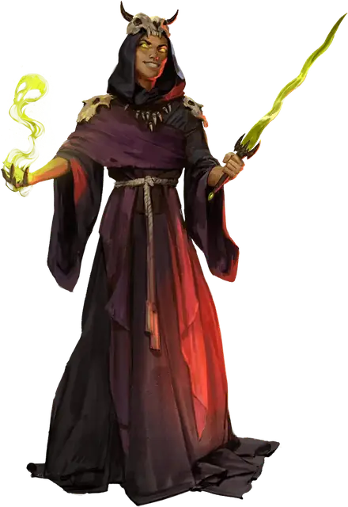

Культист иерофант
Cultist Hierophant
Средний или Маленький Гуманоид, Нейтральный

Класс Защиты 16 Инициатива +8 (18)
Хиты 144 (17к8 + 68)
Скорость 30 футов
| мод | спас | ||
|---|---|---|---|
| СИЛ | 14 | +2 | +2 |
| ЛОВ | 18 | +4 | +4 |
| ТЕЛ | 18 | +4 | +4 |
| мод | спас | ||
|---|---|---|---|
| ИНТ | 13 | +1 | +1 |
| МДР | 16 | +3 | +7 |
| ХАР | 20 | +5 | +9 |
Чувства пассивное Восприятие 17
Языки Общий, Небесный
Опасность 10 (5 900 опыта; БВ +4)
Действия
Мультиатака. Культист совершает три атаки Клинком договора или Сияющим лучом в любой комбинации.
Клинок договора. Бросок рукопашной атаки: +9, досягаемость 5 фт. Попадание: 12 (2к6 + 5) Рубящего урона плюс 18 (4к8) урона Излучением.
Сияющий луч. Бросок дальнобойной атаки: +9, дистанция 120 фт. Попадание: 31 (4к12 + 5) урона Излучением.
Сотворение заклинаний. Культист сотворяет одно из следующих заклинаний (заклинательная характеристика — Харизма, Сл спасброска заклинаний 17):
Неограниченно: Чудотворство
1/день каждое: Множественное внушение, Сияющий шторм Джалларзи, версия 7-го уровня
Бонус мастерства +4
Среда обитания Любая
Сокровища Личные, Реликварные
Культисты
Фанатики и пророки конца
С помощью магии и сомнительных практик культисты распространяют радикальные воззрения. Пока одни втайне охотятся за оккультным знаниями, другие организуют тайные общества, стремящиеся привести мир к страшному концу.
Обычно в основе культа лежит иерархия, построенная вокруг харизматичного и властного лидера. Хотя члены культа могут действовать самостоятельно, они подчиняются указаниям от вышестоящих участников, наделённых сверхъестественными способностями. Культы могут строиться на основе любой мистической традиции, но зачастую они служат сверхъестественным силам.
Культисты иерофанты — лидеры, которые управляют жизнями своих подчинённых, определяют правила культа и провозглашают волю мистической силы. У них есть сверхъестественные силы, полученные от покровителя культа, сверхъестественного источника или вследствие своего фанатичного рвения. Этим лидерам известны самые сокровенные тайны культа, и они часто владеют странными реликвиями, управляют оккультными местами и командуют чудовищными слугами.
Планы культа
Культисты зачастую практикуют малоизвестные магические обряды или помешаны на трактовке древних пророчеств. В основе их веры лежит почитание сверхъестественных покровителей: божеств, потусторонних сущностей, коварных чужеродных разумов или других загадочных сил.
Совершите бросок по таблице «План культиста» для вдохновения или выберите сами заветную цель культиста.
План культиста
| 1к6 | Культист стремится… |
| 1 | Свергнуть существующий порядок, завершить эпоху или уничтожить мир. |
| 2 | Развеять лживую иллюзию привычной реальности и раскрыть забытые или ужасные истины. |
| 3 | Распространить свою веру с помощью ментального контроля и сверхъестественного принуждения. |
| 4 | Изменить географию мира, например затопить земли или пробудить вулканы. |
| 5 | Преобразовать жизнь в глобальных масштабах, изменяя тела или души других созданий. |
| 6 | Призвать своё божество или его вестника, оружие или царство в свой мир. |
Оккультные символы
Как правило, культы отождествляют себя с символами, которые воплощают их убеждения. Такие знаки можно найти на значимых для них объектах, а также на одеяниях и телах самих культистов. Они могут быть общеизвестными или иметь значение только внутри культа. Совершите два броска по таблице «Символ культа» для вдохновения или выберите сами описание знака тайного сообщества.
Символ культа
| 1к10 | Символом культа является… | Он представлен в виде… |
| 1 | Алхимический знак | Календаря или карты |
| 2 | Животное | Герба или эмблемы рода |
| 3 | Небесное тело | Сложной схемы |
| 4 | Знака божества | Метафорического образа |
| 5 | Стихия | Мистической сущности |
| 6 | Глаз | Частью уравнения |
| 7 | Геометрическая фигура | Повторяющегося узора |
| 8 | Буква или число | Ряда царапин |
| 9 | Часть чудовища | Простой пиктограммы |
| 10 | Череп | Оружия или инструмента |